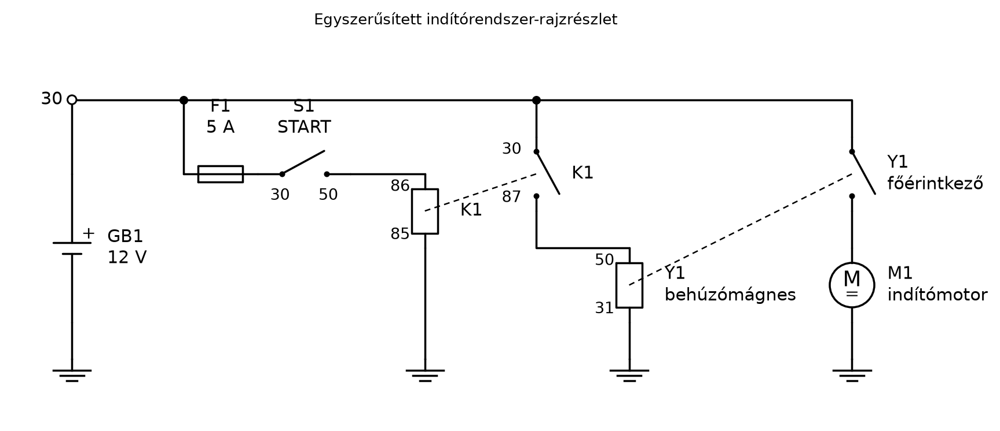

A szervizben szinte minden munka a jármű azonosításával kezdődik. Ha egy ügyfél fékbetétet, vezérlést vagy éppen lambdaszondát kér, az első kérdés nem az, hogy „mi a baja?”, hanem az, hogy pontosan milyen jármű áll előttünk. Ugyanabból a modellből – például egy népszerű alsó-középkategóriás autóból – egyetlen évjáraton belül is több féktárcsa-, futómű- és motorváltozat létezik. Ha a szerelő a típusnév alapján rendel alkatrészt, és nem ellenőrzi az alvázszámot, a motorkódot és a felszereltségi kódokat, könnyen előfordulhat, hogy a megrendelt alkatrész nem illik a járműre, vagy a javítási utasítás a rossz fedélzeti hálózatra vonatkozik.
A járműazonosítás ezért nem papírmunka, hanem a hibátlan szerelés és a biztonságos közúti üzemeltetés alapfeltétele.
Képzeljünk el egy átvizsgálásra érkező használt személygépkocsit. A szélvédő alsó sarkában, a műszerfal felől leolvasható a 17 karakterből álló alvázszám; ugyanezt a számot a B-oszlop vagy a küszöb alatti matrica is tartalmazza. A motortérben a toronycsapágy közelében vagy a hűtőmaszk mögött található a gyári típustábla, amelyen a típusjóváhagyási szám, a megengedett tengelyterhelések és a járműazonosító szám szerepel. A motor tetején vagy oldalán a motorkód betű–szám kombinációja, néha pedig a motor egyedi gyári száma is ott van. A szervizasztalon mellette fekszik a forgalmi engedély, amelynek adatait össze kell hasonlítani a járművön látottakkal. A szerelő ezekből a forrásokból kiindulva keresi meg a gyártói vagy márkafüggetlen adatbázisban az adott járműhöz tartozó javítási utasítást, beállítási értékeket és kapcsolási rajzot.
Definíció. A járműazonosító szám, más néven alvázszám (VIN, Vehicle Identification Number) a jármű egyedi, 17 karakterből álló azonosítója, amelyet a gyártó a járművön több helyen is feltüntet. A VIN három nagyobb szerkezeti részből áll: a gyártó-azonosító (WMI), a járműleíró szakasz (VDS) és a jármű-azonosító szakasz (VIS). A WMI az első 3 karakter, a VDS a 4–9. karakter, a VIS pedig a 10–17. karakter. A 10. karakter a modellévkód, a 11. karakter sok gyártónál a gyártóüzemet, a 12–17. karakter pedig a gyártási sorszámot jelöli.
Definíció. A motorkód a motor szerkezeti változatát, furat–löket arányát, befecskendezési és kipufogógáz-utókezelési kialakítását, teljesítménylépcsőjét azonosító gyártói kód. A motorszám ezzel szemben általában a motor egyedi példányszáma. Újabb járműveken gyakran nincs külön, a motorblokkba ütött motorszám; a motoron csak matrica vagy vonalkód található, a pontos adatot pedig a gyártói adatbázisból lehet kinyerni.
Definíció. A típustábla a gyártó által elhelyezett, általában a B-oszlopon vagy a motortérben lévő adattábla, amely a jármű típusjóváhagyási számát, VIN-jét, megengedett össztömegét, tengelyterheléseit, vontatható tömegeket és műszaki alapadatait tartalmazza. A típusbizonyítvány a típusjóváhagyás hatósági dokumentuma, amelyben a gyártó és a hatóság rögzíti a járműtípus műszaki jellemzőit, kategóriáját, motor- és hajtásadatait, tömeg- és méretadatait, valamint az érvényes kibocsátási előírásokat.
A VIN felépítését az alábbi táblázat foglalja össze egy kitalált tanulási példán.
| Szakasz | Pozíció | Tartalom | Tanulási példa |
|---|---|---|---|
| WMI | 1–3 | Gyártó-azonosító (világkód) | ABC |
| VDS | 4–9 | Járműleíró szakasz: típus, karosszéria, motor- és biztonsági jellemzők | 1A2345 |
| VIS | 10 | Modellévkód | D (2013) |
| VIS | 11 | Gyártóüzem kódja | 6 |
| VIS | 12–17 | Gyártási sorozatszám | 789012 |
Az értékek tanulási példák, nem valós járműhöz tartoznak (ellenőrizendő: ISO 3779, ISO 3780 szerinti pontos felépítés).
Az ábra (a) része megmutatja, hol keressük a szélvédő alatti VIN-t (1), a gyári adattáblát (2), a beütött alvázszámot (3), a motorszámot vagy motorkódot (4) és a festék- és felszereltségi kódot (5); a pontos helyek típusfüggők. A (b) rész a fenti táblázat mintaszámát bontja WMI, VDS és VIS részre.
Szabály. A VIN-ben az I, O és Q betűk nem használhatók, mert a számjegyekkel összekeverhetők (ellenőrizendő: hatályos ISO-előírás). A leolvasás után a VIN-t karakterenként össze kell hasonlítani a forgalmi engedélyben és az adatbázisban szereplő számmal. A szervizben a legfontosabb, hogy a munkalapra a VIN, a motorkód és a felszereltségi kódok pontosan kerüljenek fel, mert ezekből dolgozik később az alkatrész-keresés, a diagnosztika és a kapcsolási rajz kiválasztása.
Definíció. A márkafüggetlen adatbázis olyan számítógépes, előfizetéses rendszer, amely több gyártó járművéhez tartalmaz javítási, karbantartási, beállítási, alkatrész- és kapcsolási rajz-adatokat. A gyári adatbázis ezzel szemben egyetlen járműgyártó saját, teljes körű adatbázisa, amely a gyártói alkatrész-azonosítókat, javítási utasításokat, kódolási és kalibrációs eljárásokat is tartalmazza. A szervizben a gyártói adat a mérvadó; a márkafüggetlen adatbázis elsősorban az áttekintést, az összehasonlítást és a gyors keresést segíti.
Az adatbázisból való adatkinyerés mindig ugyanazt a logikai sorrendet követi:
Eljárás – járműazonosítás és adatkeresés
A VIN alapú azonosítást már az Járműkategóriák és a közúti járművek fő műszaki adatai alfejezetben látott típus- és tömegadatokkal, a kapcsolási rajzok értelmezését pedig a(z) A fedélzeti hálózat felépítése, kapocsjelölés és áramútrajz alfejezetben tanult kapocsjelekkel és áramút-elvvel kötjük össze.
Eljárás – alkatrész-keresés logikai sorrendje
A nyomtatott katalógusok ma már ritkábbak. Elektronikus gyári katalógusban a cikkszám mellett gyakran robbantott ábra is megjelenik, amelyen a szerelő minden csavart, tömítést és rögzítőelemet azonosítani tud. Az ábrán való tájékozódáshoz ugyanaz a rajzolvasási képesség kell, mint a műszaki rajzoknál: először a fődarabot keressük, utána a hozzá tartozó kisebb alkatrészeket, a csatlakozó felületeket és a tömítéseket.
A gépjármű-villamossági rajz kiválasztása előtt mindig le kell ellenőrizni, hogy a rajz a megfelelő modellévre, motorkódra és felszereltségre vonatkozik. Ugyanazon típusnál a fedélzeti hálózat az évjárat, a motorváltozat és az extrák függvényében jelentősen eltérhet. A rajzon a fogyasztókat, reléket, biztosítókat, csatlakozókat és testpontokat a gyártó jelölési rendszere szerint azonosítjuk. A kapcsolási rajzon található kapocsjelek – például 30, 15, 31, 50, 87 – segítségével gyorsan megállapítható, hogy egy adott vezeték állandó pozitív, gyújtás utáni pozitív vagy testpont.
A gyártói rajzok gyakran tartalmazzák a vezetékek színkódjait, a csatlakozópontok fizikai helyét, a biztosítéktábla pozíciószámait és a testpontok koordinátáit. A hibakeresés során előbb a rajzon követjük végig az áramutat, azután a járművön mérünk feszültséget és feszültségesést.
Az alábbi egyszerűsített rajzrészlet egy adatbázisból kinyert indítórendszer-rajzot mutat be. A rajzon az akkumulátor pozitív pólusa a 30-as kapocsra, a negatív pólusa a testpontra köt. A 30-as fővezetékből egy vékonyabb vezérlőág megy az F1 biztosítón és az S1 gyújtáskapcsoló START-érintkezőjén át a K1 indítórelé 86-os kapcsára; a relétekercs 85-ös kapcsa testre zár. A K1 indítórelé munkaérintkezője (30–87) az M1 indítómotor Y1 mágneskapcsolójának 50-es kapcsát táplálja; a behúzómágnes zárja az indítómotor főáramkörét a 30-as kapocs felől, a több száz amperes indítóáramot tehát nem a kis relé, hanem a mágneskapcsoló főérintkezője kapcsolja. Az indítómotor háza testre köt.

A leolvasáshoz érdemes a(z) A fedélzeti hálózat felépítése, kapocsjelölés és áramútrajz alfejezetben tanultakat felidézni: minden fogyasztóhoz zárt áramút tartozik, és a kapocsszám a vezérlőelem állásától függően mutatja, hogy a vizsgált ponton mérhető-e feszültség a testhez képest.
Példa. Egy jármű VIN-je a szélvédő alatt:
ABC1A2345D6789012 (kitalált tanulási adat). A 10. karakter
D, ami a modellévkód szerint a 2013-as modellévet jelöli; a
11. karakter 6 a gyártóüzem; a 12–17. karakter
789012 a gyártási sorozatszám. A forgalmi engedélyben a
gyártási év 2013, a motorkód CBZ, a váltókód
MQ250 (kitalált adatok). A munkalapon ezeket tüntetjük fel,
majd az adatbázisban az első fékbetét-keresésnél a felszereltségi kód
jelzi az elektronikus kopásérzékelőt. Az adatbázis így az ESP-vel
szerelt, kopásérzékelős változathoz tartozó X-123/ESP
cikkszámot adja ki, míg az alapváltozathoz X-123/STD
tartozna. A különbség a kopásjelző csatlakozójában és a fékbetét
vezetékének bekötésében van.
Példa. Ugyanezen járműhöz típustábla szerinti első tengelyterhelés 1 050 kg, hátsó tengelyterhelés 940 kg, megengedett össztömeg 1 870 kg (kitalált, ellenőrizendő: gyártói adat). Az adatbázis futómű-keresőjében a tengelyterhelés és a sportfutómű kódja alapján választjuk ki a megfelelő lengéscsillapító-készletet. Ha a szerelő csak a típusnév alapján rendelne lengéscsillapítót, a kényelmes futóműhöz való csillapító kerülhetne a sportfutóműhöz, ami rontaná a menetstabilitást.
A fenti példák mutatják, hogy a járműazonosítás és a felszereltségi kódok nélkül a látszólag egyszerű alkatrészrendelés is hibához vezethet.
Továbbvitt eredmény. A VIN és a gyártói adatbázis alapján pontosan meghatározott motorkód, váltókód, felszereltségi kód és gyártói javítási adat a Ápolási és szervizműveletek, folyadékok és szintellenőrzések, a Kárfelvétel, értékesítési dokumentáció és a gépjármű bontása és a(z) A hatósági vizsgálat jogi keretei: forgalomba helyezés, forgalmi engedély, időszakos vizsga alfejezetekben lesz alapfeltétel. A téves azonosítás rossz alkatrészt, hibás diagnózist és hatósági eltérést okozhat.
Egy ügyfél egy használt, 2012-es alsó-középkategóriás autóval érkezik, amelynek szerinte elöl „húz” a fékje, és a szerelőtől új fékbetétet kér. A szerelő a szokásos rutinnal felírja a típusnevet, és a bolti katalógusból betétet rendel. A fékbetét azonban nem illik a nyeregre, mert a járműben a gyári felszereltség szerint nagyobb féktárcsával és más féknyereg-kialakítással szerelték. A hiba felfedezése után a szerelő a VIN alapján az adatbázisban kikeresteti a járművet. A motorkód és a fékrendszer felszereltségi kódja egyértelművé teszi, hogy az első féktárcsa átmérője 312 mm, nem 280 mm, és a nyereghez kopásjelzős betét tartozik. Az új, pontos cikkszám alapján rendelt alkatrész már illik. A tanulság: a VIN-azonosítást mindig a típusnév és az évjárat megadása előtt kell elvégezni, mert a felszereltség döntheti el az alkatrészváltozatot.
Cél: a jármű VIN-jének, motor- és felszereltségi adatainak rögzítése, az adatbázisból a javítási utasítás és a kapcsolási rajz megkeresése, valamint a keresett alkatrész cikkszámának azonosítása.
Jármű- és adatazonosítás: készítsd elő a forgalmi engedélyt, a munkalapot, a fényképezőgépet vagy telefont, és az adatbázis-hozzáférést. Az ügyfél személyes adatait csak a fogyasztóvédelmi és adatvédelmi előírásoknak megfelelően, a szükséges mértékig rögzítsd.
Szükséges eszközök: zseblámpa, tiszta rongy, fényképező, esetleg tükör az alvázon lévő VIN leolvasásához, valamint a járművön található azonosítók leolvasásához szükséges védőkesztyű. Ha a jármű alatt dolgozol, használj a gyártói emelési pontokon álló emelőt vagy bakot.
Biztonsági korlát. A feladat tanműhelyi környezetre, oktató felügyeletére és a gyártói javítási utasítás betartására vonatkozik; a megadott értékek tanulási példák. Jármű alá csak a gyártói emelési pontokon felemelt és mechanikusan reteszelt műhelyi járműemelőn, vagy bakra támasztva szabad bemenni; csak kocsiemelővel tartott jármű alá bemenni tilos. Éles peremek, forró motor- és kipufogórendszer ellen viselj védőkesztyűt, és a munkaterületet tartsd tisztán.
Munkavédelmi és környezetvédelmi lépések: a leolvasáshoz használt tiszta rongyot olajos hulladékként kezeld; a papír alapú katalóguslapokat szelektíven gyűjtsd; a digitális adatbázis használata csökkenti a papírfelhasználást.
Munkalépések:
Ellenőrzési pontok: a munkalap VIN-je 17 karakter, és nem tartalmaz I, O, Q betűt; a VIN a forgalmival és a járművön lévő számmal azonos; a motorkód a járművön vagy az adatbázisban ellenőrzött; a kiválasztott javítási utasítás modelléve, motorkódja és felszereltségi feltétele a járművel azonos; a cikkszám a felszereltségi kódnak megfelelő.
Tipikus hibák: a VIN-ben az O és 0, illetve az I és 1 karakter összekeverése; a motorkód kihagyása miatt rossz motorvezérlő-alkatrész rendelése; a kapcsolási rajz kiválasztása kizárólag a típusnév alapján, a felszereltségi kód ellenőrzése nélkül.
Dokumentálás: a munkalapon szerepeljen a járműazonosító, a felhasznált adatbázis neve, a keresett alkatrész cikkszáma, a javítási utasítás és a kapcsolási rajz azonosítója, valamint a szerelő aláírása. A szervizkönyvbe csak a gyártó által előírt adatok kerülhetnek.
Hiba. A szerelő a VIN leolvasásakor az
O betűt 0-ként írja fel, ezért az adatbázis
nem találja a járművet. A megoldás: a VIN-t karakterenként, jó
fényviszony és tiszta felület mellett olvasd le, majd a fényképet is
hasonlítsd össze a munkalappal.
Hiba. A szerelő a típusnév és az évjárat alapján rendel fékbetétet, és nem ellenőrzi a felszereltségi kódot. A járműben elektronikus kopásjelzővel szerelt, nagyobb átmérőjű fékrendszer van, így az alkatrész nem illeszkedik. A megoldás: a VIN és a felszereltségi kódok alapján végzett adatbázis-kereséssel kell dolgozni.
Hiba. A kapcsolási rajzot a gyártói adatbázisban a megfelelő modellévre, de rossz motorkóddal tölti le, így a motorvezérlő tápellátása és a testpontok eltérőek a rajzon. A hibakeresés során ezért rossz ponton mér, és téves szakadást állapít meg. A megoldás: a rajz kiválasztása előtt a motorkódot, a felszereltségi kódot és a jármű fedélzeti hálózatának változatát is ellenőrizni kell.
1. feladat (A). Magyarázd el a VIN
ABC1A2345D6789012 tanulási példa alapján, hogy mit jelöl az
ABC, az 1A2345, a D, a
6 és a 789012, és melyik háromhoz tartozik a
VIS!
2. feladat (A). Sorold fel, milyen adatokat találsz a jármű típustábláján, és miért fontosak ezek az alkatrész-keresésnél!
3. feladat (B). Az adatbázisban ugyanahhoz a VIN-hez
két kapcsolási rajzot kínál: az egyik CFB motorkódhoz, a
másik CBZ motorkódhoz tartozik. A járművön a motortérben a
CBZ kód látható. Melyik rajzot választod, és miért?
4. feladat (B). Rendezd helyes sorrendbe a következő lépéseket: (a) a felszereltségi kódok megadása az adatbázisban; (b) a VIN leolvasása; (c) a rendszer és az alkatrészcsoport kiválasztása; (d) a cikkszám felírása a munkalapra; (e) a modellév, motorkód és váltókód ellenőrzése.
5. feladat (C). Egy szerelő a VIN-t
ABC1A2345D6789012 helyett
ABCI A2345 D6789O12-ként írja fel, szóközökkel és O/I
karakterekkel. Vajon mit fog tapasztalni az adatbázis-keresésben? Hogyan
javítható a hiba?
6. feladat (D). Az adatbázis az adott járműhöz az első féktárcsából két méretet ad: 280 mm és 312 mm, a felszereltségi kód szerint. A járművön nincs jól olvasható felszereltségi matrica, de a forgalmi engedély szerint az első tengely terhelése 1 050 kg, és a jármű gyári adataiban a fékrendszer felszereltségi kódja szerint „nagyteljesítményű fék” szerepel. Hogyan döntöd el a kérdést biztonságosan, mielőtt alkatrészt rendelsz?
1. feladat. Az ABC a WMI, a kitalált
gyártó-azonosító; az 1A2345 a VDS, a járműleíró szakasz; a
VIS a D6789012 (10–17. karakter): a D a
modellévkód, amely a példában 2013-as modellévet jelöl, a 6
(11. karakter) a gyártóüzem kódja, a 789012 (12–17.
karakter) pedig a gyártási sorozatszám.
2. feladat. A típustáblán általában a jármű VIN-je, a típusjóváhagyási szám, a megengedett össztömeg, a megengedett együttes (szerelvény-) tömeg, a tengelyterhelések és a vontatható tömegek szerepelnek (ellenőrizendő: a típusjóváhagyási előírás szerinti kötelező adattartalom). Az abroncsnyomás nem a típustáblán, hanem a külön abroncsnyomás-címkén (tanksapka, B-oszlop) található. Az alkatrész-keresésnél a tömeg- és tengelyterhelési adatok fontosak a futómű- és fékváltozat kiválasztásánál, a VIN pedig a jármű egyértelmű azonosításához kell.
3. feladat. A CBZ motorkódhoz tartozó
rajzot kell választani, mert a kapcsolási rajz a motorirányítás és a
fedélzeti hálózat szempontjából a motorkódhoz kötött. A CFB
rajz hibás motorváltozathoz tartozna, így a tápellátás, a jeladók és a
testpontok is eltérőek lehetnének.
4. feladat. Helyes sorrend: b, e, a, c, d. Először leolvassuk a VIN-t, ellenőrizzük a modellévet, motorkódot és váltókódot, majd a felszereltségi kódokat adjuk meg, kiválasztjuk a rendszert és alkatrészcsoportot, végül a cikkszámot a munkalapra írjuk.
5. feladat. Az adatbázis valószínűleg nem találja a
járművet, mert a VIN-ben a szóközök, az I és az
O karakterek nem megengedettek. A hibás leolvasás miatt a
jármű egyedi azonosítása meghiúsul. A hibát a járművön lévő VIN és a
forgalmi engedély karakterről karakterre való összehasonlításával lehet
javítani; az O/0 és I/1 párokat különösen figyelmesen kell
ellenőrizni.
6. feladat. A kérdés eldöntéséhez először a VIN alapján le kell kérni a gyártói adatbázisban a jármű felszereltségi kódjait. Ha a jármű a „nagyteljesítményű fék” kóddal rendelkezik, akkor a 312 mm-es tárcsa a helyes. Ha a felszereltségi kód nem elérhető, akkor a járművön mérni is lehet a szerelt féktárcsa átmérőjét tolómérővel vagy a nyereg geometriáját a gyártói rajz alapján, de a biztonságos döntéshez mindig a gyártói adatbázisból kinyert felszereltségi kód a mérvadó. A forgalmi engedély tengelyterhelése önmagában nem azonosítja egyértelműen a féktárcsaméretet, csak a gyártói felszereltségi kód.
A járműjavítás minden lépése az egyértelmű járműazonosítással kezdődik. A VIN 17 karakterből áll: az első 3 karakter a gyártót (WMI), a 4–9. karakter a járműleíró szakaszt (VDS), a 10–17. karakter pedig a jármű-azonosító szakaszt (VIS) jelöli. A 10. karakter a modellévkód, a 11. karakter gyakran a gyártóüzem, az utolsó hat karakter a sorozatszám. A szervizben a VIN mellett a forgalmi engedély, a típustábla, a motorkód és a felszereltségi kódok együttesen határozzák meg, hogy melyik alkatrész és kapcsolási rajz illik a járműhöz. A márkafüggetlen és a gyári adatbázisok a VIN-alapú keresésből kiindulva adják meg a javítási utasításokat, az alkatrész-cikkszámokat és a fedélzeti hálózat rajzait. A gyári adat elsőbbséget élvez, különösen a biztonsági alkatrészeknél. A kapcsolási rajzon a 30, 15, 31, 50 és 87 jelölések segítenek az áramút követésében. Továbbvitt eredmény. A pontos járműazonosítás és adatkeresés az ápolási és szervizműveletek, a kárfelvétel és a hatósági vizsgálat alapfeltétele; a téves adat rossz alkatrészhez, hibás diagnózishoz és hatósági eltéréshez vezet.
Forrástípusok: ISO 3779 és ISO 3780 VIN-felépítés; (EU) 2018/858 típusjóváhagyási keretrendelet; a hazai forgalmi engedély és típusbizonyítvány adattartalmára vonatkozó műszaki vizsgálati szabályok; gyártói javítási utasítások és elektronikus katalógusok; márkafüggetlen adatbázis-típusok (Autodata típusú rendszerek) felépítése.
Ellenőrizendő állítások:
- a VIN-szerkezet pontos ISO-előírása és a modellévkódok
hozzárendelése;
- a hazai forgalmi engedélyben szereplő azonosító adatok pontos köre és
a 6/1990. (IV. 12.) KÖHÉM rendelet szerinti adattartalom (ellenőrizendő:
hatályos szöveg);
- a típustábla pontos elhelyezkedése és kötelező adatai a
típusjóváhagyási előírások szerint;
- a motorkód és motorszám feltüntetésének módja az egyes
gyártóknál;
- az adatbázisok licencfeltételei és a gyári adatok felhasználására
vonatkozó szerződési korlátozások.